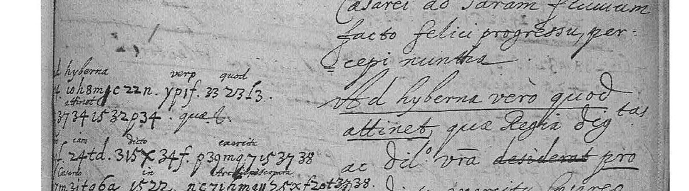
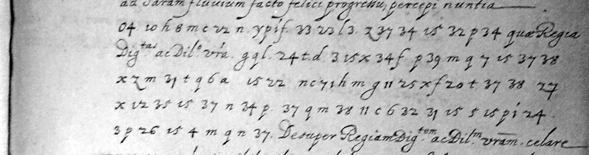
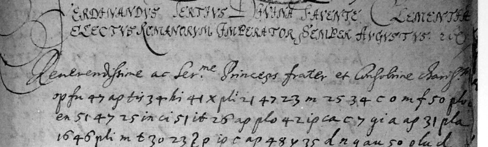
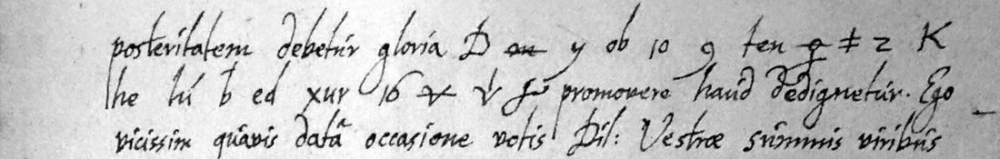

At a glance1635 and 1640: complete (450 of 463 and 782 of 782 tokens) · 1634: partial, 88.4% of 474 tokens
- The letters
- Ferdinand, King of Hungary, to his cousin the Cardinal-Infante Ferdinand, Stuttgart, 28 October 1634; the Cardinal-Infante to the King, Brussels, 16 November 1635; Ferdinand III, now Emperor, to the Cardinal-Infante, Vienna, 22 February 1640. All in Latin, clear text with enciphered passages.
- Where
- Archives générales du Royaume, Brussels, Secrétairerie d’État allemande 540. DECODE R1887, R1889 and R1890, all listed there as not decrypted; the Cardinal-Infante’s draft of the 1635 letter is DECODE R954.
- The cipher
- 1635: a Latin alphabet of numbers and letters, two to five signs per letter. 1640: the same alphabet plus syllables in AEIOU order. 1634: a different system of letter groups, numbers and drawn signs, also in vowel order.
- How it was done
- 1635: the draft, with the enciphered passages underlined, aligned word by word with the letter. 1640: the 1635 alphabet fixed, the syllables recovered from the ciphertext by annealing. 1634: transcribed here; its last cipher passage repeats the clear words that follow it, which fixed the first values.
- What it says
- The Cardinal-Infante refuses imperial winter quarters in Trier, a Spanish garrison town; five years later the Emperor asks him for
centum mille florenos
to be paid at Cologne. - Still open
- In the 1634 letter, one word of six signs and a span of sixteen, each sign with a value but no Latin that fits; four conjectures on single signs. In 1640 one sign hidden at the page edge.
- Credit
- Andrew Aymeloglu published readings of all three letters on GitHub (aaymeloglu/unsolved-ciphers, 18–23 September 2026). This work found his repository on 30 September and did not open his key or text until after its own recovery. His README, which says the 1640 additions are mostly syllables, and his source list, which names the draft R954 (also on the DECODE record), were opened before the 1635 and 1640 work began. The two readings agree.
01 The three letters
The two Ferdinands were cousins and brothers-in-law: Ferdinand of Habsburg, King of Hungary and Bohemia, succeeded his father as Emperor in 1637; the Cardinal-Infante Ferdinand, brother of Philip IV, governed the Spanish Netherlands from 1634 to his death in 1641. In September 1634 they had beaten the Swedes together at Nördlingen. Their Latin correspondence in the Brussels Secrétairerie d’État allemande includes three letters with passages in cipher, photographed on DECODE without a decipherment:
| DECODE | Date | From → to | Cipher tokens | Result |
|---|---|---|---|---|
| R1887 | 28 Oct 1634, Stuttgart | Ferdinand, King of Hungary → Cardinal-Infante | 474 | key recovered from an in-letter crib, 88.4% read as sense |
| R1889 | 16 Nov 1635, Brussels | Cardinal-Infante → King of Hungary | 463 | key recovered from the draft R954, complete |
| R1890 | 22 Feb 1640, Vienna | Emperor Ferdinand III → Cardinal-Infante | 782 | syllabary recovered from the ciphertext, complete |
DECODE has transcriptions of R1889 and R1890 (by “XZ”, January 2021) but none of R1887. The neighbouring records R1885–R1892 hold no key, and R1886 and R1888 do not exist. The R1889 record itself points to R954, the Cardinal-Infante’s draft of the same date. DECODE describes R954’s recipient as Emperor Ferdinand II; the letter addresses Serenissime Rex
, so it is the King of Hungary.
These are not the Ferdinand III letters of Klaus Schmeh’s Top 50 list (no. 27). Those are letters to his brother Archduke Leopold Wilhelm of 1640 and 1641, solved by Thomas Ernst in 2017 (“Zifra Piccolominea”). Ernst’s key does not fit the Brussels letters.
02 The 1635 letter and its draft

The draft gives the full Latin text in its right column, with the passages to be enciphered underlined. The secretary’s encipherment in the left margin carries a few glosses. That is plaintext beside the ciphertext. The letter’s 74 cipher words, 463 tokens, were aligned one by one with the underlined words. Where DECODE’s spacing ran signs together the image settled it: 04 10 is 0 4 ad + 10, the h of hyberna; 2000m is 20 c 0 m (prae-); 37731 is 37 7 31.

A majority vote over the aligned pairs gives the alphabet (u/v and i/y one letter each):
| a | b | c | d | e | f | g | h | i | l | m | n | o | p | q | r | s | t | u | x |
|---|---|---|---|---|---|---|---|---|---|---|---|---|---|---|---|---|---|---|---|
| 0 n t z | 8 9 | 7 x | 3 4 | 6 m p | 2 5 | 16 17 | 1 10 | 11 12 15 24 h | 18 19 | d e | 22 32 | a f l | 20 g | 30 33 | c i q | 25 26 31 | 34 37 | 23 35 38 y | 39 |
Letters of the alphabet are cipher signs too, and doubled letters are written double. With this key 450 of the 463 tokens (97.2%) give the draft’s letter. The thirteen others are the copyist’s: 6 stands four times for m, 7 once for a and once for u, 9 once for p, 2 once for n; civitate lacks its it, prinncipis doubles an n, hctenus lacks an a. All of them are in words that the draft fixes.
The enciphered passages, in the draft’s wording (clear words in brackets):
Ad hyberna vero quod attinet, [quae Regia Dig.tas ac Dil.o vra] pro iam dicto exercitu Caesareo in Archiepiscopatu ac Civitate Treuirensi fieri desiderat. … Verum cum civitas Treuirensis iam inde a ducentis annis sub [Regiae suae Cat.cae Maiestatis] stet protectione atque [eo nomine] ab eius milite [semper quando id necessitas postulavit] fuerit praesidio munita, [uti etiam fuit cum] Gallus vexilla regia superans eandem occuparet; [Conveniens esse arbitror, ut] praesidium hoc regium in dicta civitate locisque circumiacentibus [conservetur, ex quibus] sumet alimenta necessaria [tum ad] sui ipsius uti convenit, tum principis electoris (cui hactenus ex aerario [Regiae suae Cat.cae Maiestatis] provisum fuit) sustentationem. … [quod] militi Caesareo in dictis locis difficulter hiberna concedi possint, [aeque boni laturam].
The King had asked for winter quarters for the imperial army in the archbishopric and city of Trier. The Cardinal-Infante answers that Trier has stood under Spanish protection for two hundred years and has had a Spanish garrison whenever needed, as when the French took it; the royal garrison should stay in the city and the places around it and draw its own upkeep and the Elector’s from them. He trusts the King will take it in good part that winter quarters there can hardly be granted.
03 The 1640 letter: a syllabary on top of the 1635 alphabet

op fu 47 ap tis 34 | hi 41 x pli 21 47 | 23 m 25 34 c o m, co-mu-ni-ca-bi-t | di-le-c-ti-o-ni | u-e-s-t-r-a-e, Comunicabit Dilectioni Vestrae. Image: Archives générales du Royaume (Brussels), Secrétairerie d’État allemande 540, letter of 22 Feb 1640 p. 1, via DECODE R1890.The letter is enciphered almost throughout, 782 tokens. The first attack used nothing outside the ciphertext: a homophonic substitution solver (one sign = one letter, Latin 5-gram model plus a letter-frequency term), 76 restarts of 4 to 10 million steps. The same solver recovers a synthetic Latin text of the same length and symbol count (99.7% in 3 of 16 restarts), but on R1890 it never converged. So the letter is not a plain homophonic substitution.
With the 1635 alphabet fixed, 424 of the 784 tokens have a value. The rest are numbers 14, 21, 36, 40–54 and letter groups such as pla ple pli plo plu, ap ep ip op up, tas tes tis tos tus. A free-value search pointed to 48 = no, 51 = re, 53 = ro: numbers in vowel order. The hypothesis was then one consonant per family and the vowels in AEIOU order, shown openly in the letter groups. All the best restarts of the family anneal converged on the same table:
| Signs | Values | Signs | Values |
|---|---|---|---|
| 40–44 | la le li lo lu | pla ple pli plo plu | ta te ti to tu |
| 45–49 | na ne ni no nu | ap ep ip op up | ca ce ci co cu |
| 50–54 | ra re ri ro ru | ca ce ci co cu | ma me mi mo mu |
| ha he hi ho hu | da de di do du | tas tes tis tos tus | ba be bi bo bu |
| an en in on un | sa se si so su | au eu ou uu | pa pe po pu |
| me mi mu | fe fi fu | at et it ot | ga ge gi go |
| ga gi | ha hi | 21 · 36 · b · o | o · x · m · a |
The families ga gi = ha hi and at et it ot = ga ge gi go, and the single signs ko = do (domus), fu = mu, lx = oc (occurrat), li = xi (existentium) and 14 = tz (Hatzfeldius, twice) were set from context; they are graded I below. DECODE’s uncertain readings were checked on the image: every “l/z?” is z (seven places), “c/1? o/0?” is the group co, “pla/u?” is plu. With these, every one of the 782 tokens has a value. The copy has three slips: igitua, materi, expredse.
Comunicabit Dilectioni Vestrae orato[r] Serenissimi Regis Catolici marchio Castagneti ea quae circa novum apparatum militis in circulo Westphalico ab electore Coloniae et statibus illius circuli inceptum, ac quae inde in praeiudicium boni publici et etiam domus nostrae vereamur incommoda, secum fusius contulimus. Cum igitu[r] illud negotium celeri remedio indigeat, neque alius pro eo occurrat modus quam ut et nos festinanter collectionem militis, qui in potentiorem numerum quam dictus apparatus se extendat, in illis partibus instituamus, si alias liberam dispositionem ibidem servare et praecavere velimus ne ille circulus alieno arbitrio subiiciatur, ordinavimus eapropter quatenus comes Hatzfeldius se confestim Coloniam transferre atque huic operi qua maiore potest celeritate manum admovere debeat. Deficientibus vero nobis pro eo sumptibus necessariis, petimus a Dilectione Vestra denuo perinstanter quatenus iis quae sibi praedictus orator in hac materi[a] distinctius expositurus est omnimodam fidem habere et considerata rei gravitate desideratos hactenus centum mille florenos Coloniam custodiae nostrorum ibidem existentium commissariorum (quibus expre[s]se iniungimus ne quidquam ex illis praeter expressum mandatum nostrum aut comitis Hatzfeldii assignationem expendant) consignari curare velit.
The Spanish ambassador, the marqués de Castañeda, will explain what the Emperor fears from the new armament begun by the Elector of Cologne and the estates of the Westphalian Circle. The only remedy is to raise a stronger force there at once, so that the Circle does not fall under another’s control, and Count Melchior von Hatzfeldt is to go to Cologne without delay. The Emperor lacks the money and asks again, urgently, for the 100,000 florins long requested, to be paid at Cologne into the keeping of his commissaries, who may spend nothing without his order or Hatzfeldt’s assignment.
04 The 1634 letter: a different system, opened by a repeated phrase
R1887 had no transcription, so all 474 tokens were transcribed here from the photographs, line by line, with ad hoc labels for the drawn signs. Its system is not the 1635 one. It has three-letter groups in vowel series (xar xer xir xur, tan…tun, pan…pun, for fer fir fur), two-letter groups (ob eb ib ub, ad ed id od ud, he hi ho hu), numbers from 2 to 48, and drawn signs (a triangle, a slashed equals, struck m and D, crossed a and n, a female sign), some with superscript marks. A family anneal like the one used on R1890 collapsed to bare vowels. With consonants forced it gave Latin-like text that did not converge.

D/ m/ y ob 10 9 ten | o/ ≠ 2 K | he hi b ed xur 16 is followed in clear by the same words, promovere haud dedignetur. Image: Archives générales du Royaume (Brussels), Secrétairerie d’État allemande 540, letter of 28 Oct 1634 p. 3, via DECODE R1887.The opening came from the last page. The final cipher passage is followed by the clear words promovere haud dedignetur, and the three cipher words before them have exactly those lengths. Taking them as the plaintext fixes ob = mo, ten = re, he hi = de di, ed = ne, xur = tu and eleven single signs. That gives five families: ?b = m + vowel, t?n = r, h? = d, ?d = n, x?r = t. With those fixed, every top restart of the anneal agreed on the rest: f?r = c, ?c = vowel + s, ?r = f, l?s = g, t?s = s, p?n = l, s?l = b; the triangle = n, tt = s, 43 = in, 42 = en, and a superscript 9 doubles the sign under it (13^9 = ll).
Read word by word against the images, 324 tokens give the word directly, 95 need one sign read against its usual value with the word fixed by context, 26 rest on conjectures, 22 are open and 7 are terminal fillers: 88.4% of tokens read as sense, 93.9% with the conjectures. That is below the project’s 95% bar, so this letter is partial.
Cum communis Augustissimae nostrae domus salutis stabiliendae ratio summopere requirat … facile colligere liceat ipsum nullos [ausus quos] restituendis illis, qui in fidem ac tutelam ipsius se coniecerint, principibus, imprimis Wirtenbergico et Durlacensi, profuturos esse crediderit, intermissurum. [Eventus] vero inde (…) non minoris emolumenti vel detrimenti rebus Dilectionis Vestrae quam meis [partibus] sit allaturus. Ideo cum quantum in me est subvertendis hisce communis nostrae domus hostium conatibus intendere non desinam, idem illud studium in Dil. Vestra excitare maximopere necessarium duxi. Eandem perbenevole rogans ut mediante aliquo, qui distractis illorum in diversas partes animis facilius mihi ad peragendum hunc ipsorumque (…) negotium armorum suorum motu et diversione, commune quod uterque praetendimus praedictae Augustissimae nostrae domus commodum, non minor [quam ea] quae ex conflictu Nordlingensi maximo suo merito ipsi apud Seren[issimum] … posteritatem debetur gloria, promovere haud dedignetur.
Seven weeks after Nördlingen the King writes that the enemy will spare no attempt to restore the princes who have put themselves under his protection, above all Württemberg and Baden-Durlach. The outcome concerns the Cardinal-Infante’s affairs no less than his own, so he asks him to divide the enemy’s attention by a movement and diversion of his arms and so further their house’s common good, which will bring him glory no less than that owed to him for Nördlingen.
05 Method and what was independent
- 1635 (R1889): key recovered from adjacent plaintext, the draft in the same file. Alignment and vote:
work/align1889.py, measurework/measure1889.py. - 1640 (R1890): key recovered from the ciphertext, on top of the 1635 alphabet: free-value search (
work/syl1890.py), then the family anneal (work/fam1890.py) on thelamodel oflang/. - 1634 (R1887): key recovered from the letter’s own clear phrase as a crib, plus the crib-seeded anneal (
work/fam1887.py) and context. Reading inwork/align1887.txt, measurework/measure1887.py.
Prior work. Andrew Aymeloglu published keys and readings of these letters on GitHub between 18 and 23 September 2026, and Satoshi Tomokiyo’s list of open ciphers marks the group “Two of Three Solved”. This project found his repository on 30 September and did not open it then. On 9 October, after the failed ciphertext-only attack on R1890, his README and source list were opened. The README says the 1640 additions are mostly syllables. The source list names the draft R954, which the R1889 DECODE record also names. His key and reading files were opened only after the three keys above had been recovered, for comparison. So the 1640 syllabary was recovered by someone who knew it was mostly syllables, but no value was taken from him. For 1640 the two readings agree family for family, including the amendments l/z = z and c/1 o/0 = co. For 1634 both have the same families and the same open spans. This page adds suorum (he has quorum), the conjectures ausus quos, eventus and quam ea where he leaves a gap, and confirms on the image the ib he marks as probable in intermissurum.
06 What remains uncertain
Grades as in the project conventions: H from a primary key source, C from a known-plaintext letter, M uncertain, I inferred from context.
- R1889: every value C (from the draft). For the thirteen copy slips listed above the draft gives the word.
- R1890: the family values are recovered from the ciphertext and agree across restarts; the context values
ga gi= ha hi,at et it ot= ga ge gi go,ko= do,fu= mu,lx= oc,li= xi and14= tz are I. The last sign of p. 1 line 1 (orato[r]) is hidden by the dark edge of the photograph (illegible). - R1887, open:
n+ m/ a+ 45 hu ttafter Eventus vero inde, literally crisdus (45 = s, as in communis), and the sixteen tokens4 ib ad p xir m/ a+ 4 4) xir 4 ten h^ga ≠ S e~before negotium, literally ?minantiri?ti?re?at?. A last pass on 9 October (work/gap1887.py) tried every value each sign takes in the letter, kept the strings that split into Latin words and ranked them with the Latin model in context. It found 571 and 1,704 candidates; none fits the grammar of the sentence. Either the encipherer slipped more than once, or a sign is misvalued. - R1887, conjectures (I): ausus quos (
≠ 2 ltu #,3 2 #), eventus (9 v/ 2 p Δ xur tt), partibus (146 m/ xer 4, literally ?rtes), quam ea (X 10 41^x ≠ f,9 c/), -que forcalin uterque. The signs ltu, #, v/, 146, X and c/ occur once each. - R1887, M: 95 tokens read against their usual value, each in a word fixed by context (for example domus written domis, mihi as rei, facilius as haci?us); listed in
work/align1887.txt. - R1887, fillers: V L after ratio, V and the female sign after ea, v/ V f/ after dedignetur; read as terminal fillers.
Hildegard Ernst, “Geheimschriften im diplomatischen Briefverkehr zwischen Wien, Madrid und Brüssel 1635–1642”, MIÖG 100 (1992), studies exactly this correspondence and may print the 1634 key; it was not reachable online.
Full texts
The transcription and the decryption of every document on this page, so that the reading can be used and checked. Short files are shown here; all are in the repository.
R1887, Ferdinand, King of Hungary, to the Cardinal-Infante, Stuttgart, 28 Oct 1634
Written after the victory at Nördlingen: the other side is expected to spare no attempt to restore the princes who put themselves under its protection, above all Württemberg and Durlach, and Ferdinand asks the Cardinal-Infante to oppose the designs of the enemies of the House by a movement and diversion of his arms. A 6-token word and a 16-token span remain open.
Transcription
# R1887 (28 Oct 1634, Stuttgart) cipher transcription from DECODE images I9345-I9347 (rotated 90 deg), by Claude, 9 Oct 2026. # One physical line per row; tokens separated by spaces. Labels: # tt double-t sign # hash sign + dagger with crossbar (‡) # != slashed equals (≠) D/ struck D m/ struck m (m with stroke) # f/ f with crossbar n+ n with cross a+ a with cross (a4-like) # Z z/3-like sign (Ʒ/≥) Z/ z struck through V v with descender (↓) # L crossed script L Δ triangle S long-s/§-like sign # ^x superscript mark above the preceding sign (^9, ^v, ^x, ^o) # ? uncertain reading; [..] clear text P1.01 [cum] for ub id tt != 10 his tt xir tis eb od tt S? m/ 9 ho ib tt tas P1.02 pin xir Z tt xar sil pin 42 he tan + a+ y V L [summopere requirat ...] P1.03 [... facile colligere liceat] Z D/ tus f/ P1.04 ud 13^9 oc != 2 ltu # 3 2 # ten? tt xir xur 9 Δ hi tt a+ Z^9 P1.05 ic 5 2 Z 43 ir he f/ != n+ xur xer pan 4 g D/ tis uc tes P1.06 for Δ 9^v a+ 9 fer tun^o tin Δ 8 D/ m/ 43 fir 48 sul Z/ 43 P1.07 D/ m/ a+ 16 Z/ Z^9 a+ 4^v m/ xer f^x Δ sed? m/ lis for 9 S hu P1.08 16 pan fer p tis D/ m/ y ur xur ton tt 9 tes n+ 16 9 P2.01 hi he tin S 43 xer m/ ll tus tun f 9 v/ 2 p Δ P2.02 xur tt 10 9 ton 43 he n+ m/ a+ 45 hu tt/ od Δ P2.03 ib od ten 4 p/ ob pun eb p xir 2 9 Z he S m/ a+ eb P2.04 p xir ten sul tt/ hi pen n+^9 a+ y ed tt/ 2 9 tt/ S m/ P2.05 9 3 2 != 4 eb ic 146 m/ xer 4 his S != 13^9 != xur P2.06 tun tt/ a+ he y fur f 3 10 != 2 xur f 43 eb ec S P2.07 tus 10 8 10 9 m/ xer Δ hi tt/ ic fer for ub Δ^9 a+ P2.08 45 od tt/ S m/ 9 ho ub Z/ V oc xir 2 f^v for Δ ad^x != xir P2.09 sul tt 43 xer Δ hes ten od p he tis ad f [idem illud studium in Dil: Vestra excitare maximopere necessarium duxi.] P2.10 [Eandem perbenevole rogans] 10 S eb hi 41 xer != pin 5 2 y P2.11 5 10 a+ hi tt S m/ != n+ xir tt ss Q pon tun Δ 43 P2.12 hi 10 9 m/ tas Z/ 46 16 xer tt/ != id ib tt/ o/ != fir p? P2.13 uc 16 e/ a+ != K 12 16 != les Δ hu f o/ 10 n+^x P2.14 Δ n+ a+ 15 tos tun f 3 2 9 4 ib ad p xir m/ P2.15 a+ 4 4) xir 4 ten h^ga != S e~ ed los fir 2 f != P2.16 m/ ob tun f tus y tun f ob xir 9 S hi 10 9 m/ P2.17 tis y ed for Δ^9 a+ ed 3 10 y K Z xer 16 cal D/ P2.18 m/ 9 xer Δ hi ub Z/ D/ m/ p/ hi n+ xer != 2 lus P2.19 tt/ xir tis eb od tt/ S m/^x 9 ho ib tt/ for ub y hu 4 P2.20 od 4 ib od 16 X 10 41^x != f 9 c/ V ♀ [quae ex conflictu Nordlingensi maximo suo merito ipsi apud Seren(issimum) ... D: V] P3.01 [posteritatem debetur gloria] D/ m/ y ob 10 9 ten o/ != 2 K P3.02 he hi b ed xur 16 v/ V f/ [promovere haud dedignetur. Ego vicissim ...]
Transcription
# R1887 cipher tokens, one word per line (from work/align1887.txt) for ub id tt != 10 his tt xir tis eb od tt S? m/ 9 ho ib tt tas pin xir Z tt tt xar sil pin 42 he tan + a+ y V L Z D/ tus f/ ud 13^9 oc != 2 ltu # 3 2 # ten tt xir xur 9 Δ hi tt a+ Z^9 ic 5 2 Z 43 ir he f/ != n+ xur xer pan 4 g D/ tis uc tes for Δ 9^v a+ 9 fer tun^o tin Δ 8 D/ m/ 43 fir 48 sul Z/ 43 D/ m/ a+ 16 Z/ Z^9 a+ 4^v m/ xer f^x Δ sed m/ lis for 9 S hu 16 pan fer p tis D/ m/ y ur xur ton tt 9 tes n+ 16 9 hi he tin S 43 xer m/ ll tus tun f 9 v/ 2 p Δ xur tt 10 9 ton 43 he n+ m/ a+ 45 hu tt od Δ ib od ten 4 p/ ob pun eb p xir 2 9 Z he S m/ a+ eb p xir ten sul tt hi pen n+^9 a+ y ed tt 2 9 tt S m/ 9 3 2 != 4 eb ic 146 m/ xer 4 his S != 13^9 != xur tun tt a+ he y fur f 3 10 != 2 xur f 43 eb ec S tus 10 8 10 9 m/ xer Δ hi tt ic fer for ub Δ^9 a+ 45 od tt S m/ 9 ho ub Z/ V oc xir 2 f^v for Δ ad^x != xir sul tt 43 xer Δ hes ten od p he tis ad f 10 S eb hi 41 xer != pin 5 2 y 5 10 a+ hi tt S m/ != n+ xir tt ss Q pon tun Δ 43 hi 10 9 m/ tas Z/ 46 16 xer tt != id ib tt o/ != fir p? uc 16 e/ a+ != K 12 16 != les Δ hu f o/ 10 n+^x Δ n+ a+ 15 tos tun f 3 2 9 4 ib ad p xir m/ a+ 4 4) xir 4 ten h^ga != S e~ ed los fir 2 f != m/ ob tun f tus y tun f ob xir 9 S hi 10 9 m/ tis y ed for Δ^9 a+ ed 3 10 y K Z xer 16 cal D/ m/ 9 xer Δ hi ub Z/ D/ m/ p/ hi n+ xer != 2 lus tt xir tis eb od tt S m/^x 9 ho ib tt for ub y hu 4 od 4 ib od 16 X 10 41^x != f 9 c/ V ♀ D/ m/ y ob 10 9 ten o/ != 2 K he hi b ed xur 16 v/ V f/
Decryption
# R1887 (28 Oct 1634): decryption, copied verbatim from NOTES.md (section 'R1887 ... transcription and key rebuild'). Word-by-word reading with status per word: work/align1887.txt. - Latin (our reading; [..] conjecture, (?) open): "Cum communis Augustissimae nostrae domus salutis stabiliendae ratio summopere requirat ... facile colligere liceat ipsum nullos [ausus quos] restituendis illis, qui in fidem ac tutelam ipsius se coniecerint, principibus, imprimis Wirtenbergico et Durlacensi, profuturos esse crediderit, intermissurum. [Eventus] vero inde (crisdus) non minoris emolumenti vel detrimenti rebus Dilectionis Vestrae quam meis [partibus?] sit allaturus. Ideo cum quantum in me est subvertendis hisce communis nostrae domus hostium conatibus intendere non desinam, idem illud studium in Dil. Vestra excitare maximopere necessarium duxi. Eandem perbenevole rogans ut mediante aliquo, qui distractis illorum in diversas partes animis facilius mihi ad peragendum hunc ipsorumque (... 16 tokens ...) negotium armorum suorum motu et diversione, commune quod uterque praetendimus praedictae Augustissimae nostrae domus commodum, non minor [quam ea] quae ex conflictu Nordlingensi maximo suo merito ipsi apud Seren[issimum] ... posteritatem debetur gloria, promovere haud dedignetur."
Decryption
# R1887 (28 Oct 1634): word-by-word reading. cipher tokens (transcription/R1887.txt labels, superscripts kept) # | literal under key1887 | reading | status # status: ok = literal gives the word (spelling variants e/ae, single/double letters, c/t, u/v allowed); # emend = one sign against its usual value, word fixed by context; conj = conjecture; open = unread; # null = terminal/filler signs. # --- segment 1 (P1.01-02), after clear "cum" for ub id tt | comunis | communis | ok != 10 his tt xir tis eb | au?stisime | Augustissimae | emend od tt S? m/ 9 | nostre | nostrae | ok ho ib tt | domis | domus | emend tas pin xir Z tt | salitiis | salutis | emend tt xar sil pin 42 he | stabiliende | stabiliendae | ok tan + a+ y | ratio | ratio | ok V L | - | - | null # (clear: summopere requirat ... facile colligere liceat) # --- segment 2 (P1.03-P2.09) Z D/ tus f/ | ipsum | ipsum | ok ud 13^9 oc | nullos | nullos | ok != 2 ltu # | au??? | ausus | conj 3 2 # | qu? | quos | conj ten tt xir xur 9 Δ hi tt | restituendis | restituendis | ok a+ Z^9 ic | illis | illis | ok 5 2 Z | qui | qui | ok 43 | in | in | ok ir he f/ | fidem | fidem | ok != n+ | ac | ac | ok xur xer pan 4 | tutelam | tutelam | ok g D/ tis uc | ipsius | ipsius | ok tes | se | se | ok for Δ 9^v a+ 9 fer tun^o tin Δ 8 | con?iece?rint | coniecerint | emend D/ m/ 43 fir 48 sul Z/ | princi?bus | principibus | ok 43 D/ m/ a+ 16 Z/ | inprims | inprimis | emend Z^9 a+ 4^v m/ xer f^x Δ sed m/ lis | ?i?rte?nbergi | Wirtenbergi- | emend for | co | -co | ok 9 S | et | et | ok hu 16 pan fer p tis | durlacensi | Durlacensi | ok D/ m/ y ur xur ton tt | profuturos | profuturos | ok 9 tes | ese | esse | ok n+ 16 9 hi he tin S | crediderit | crediderit | ok 43 xer m/ ll tus tun f | intermisurum | intermissurum | ok 9 v/ 2 p Δ xur tt | e?unntus | eventus | conj 10 9 ton | uero | vero | ok 43 he | inde | inde | ok n+ m/ a+ 45 hu tt | crisdus | ? | open od Δ | non | non | ok ib od ten 4 | minorem | minoris | emend p/ ob pun eb p xir | emolumenti | emolumenti | ok 2 9 Z | uel | vel | emend he S m/ a+ eb p xir | detrimenti | detrimenti | ok ten sul tt | rebus | rebus | ok hi pen n+^9 a+ y ed tt | dilectiones | Dilectionis | ok 2 9 tt S m/ 9 | uestre | Vestrae | ok 3 2 != 4 | quam | quam | ok eb ic | meis | meis | ok 146 m/ xer 4 | ?rtes | partes | conj his S | sit | sit | ok != 13^9 != xur tun tt | allaturus | allaturus | ok a+ he y | ideo | ideo | ok fur f | cum | cum | ok 3 10 != 2 xur f | quautum | quantum | ok 43 | in | in | ok eb | me | me | ok ec S | est | est | ok tus 10 8 10 9 m/ xer Δ hi tt | su?b?uertendis | subvertendis | emend ic fer | isce | hisce | ok for ub Δ^9 a+ 45 | communis | communis | ok od tt S m/ 9 | nostre | nostrae | ok ho ub Z/ | domus | domus | ok V oc xir 2 f^v | ostium | hostium | ok for Δ ad^x != xir sul tt | conatibus | conatibus | ok 43 xer Δ hes ten | intendere | intendere | ok od p | non | non | ok he tis ad f | desinam | desinam | ok # (clear: idem illud studium ... Eandem perbenevole rogans) # --- segment 3 (P2.10-P2.20) 10 S | ut | ut | ok eb hi 41 xer | mediate | mediante | emend != pin 5 2 y | aliquo | aliquo | ok 5 10 a+ | qui | qui | ok hi tt S m/ != n+ xir tt | distractis | distractis | ok ss Q pon tun Δ | illorun | illorum | ok 43 | in | in | ok hi 10 9 m/ tas Z/ | diuersas | diversas | ok 46 16 xer tt | artes | partes | emend != id ib tt | animis | animis | ok o/ != fir p? uc | haci?us | facilius | emend 16 e/ a+ | rei | mihi | emend != K | ad | ad | ok 12 16 != les Δ hu f | ?ragendum | peragendum | emend o/ 10 n+^x Δ n+ | hu?nc | hunc | ok a+ 15 tos tun f 3 2 9 | ipsorumque | ipsorumque | ok 4 ib ad p xir m/ a+ 4 4) xir 4 ten h^ga != S e~ | ?minantiri??ti?re?at? | ? | open ed los fir 2 f | negocium | negotium | ok != m/ ob tun f | armorum | armorum | ok tus y tun f | suorum | suorum | ok ob xir | moti | motu | emend 9 S | et | et | ok hi 10 9 m/ tis y ed | diuersione | diversione | ok for Δ^9 a+ ed | conine | commune | emend 3 10 y K | quod | quod | ok Z xer 16 | iter | uter- | emend cal | ? | -que | conj D/ m/ 9 xer Δ hi ub Z/ | pretendimus | praetendimus | ok D/ m/ p/ hi n+ xer | predicte | praedictae | ok != 2 lus tt xir tis eb | augustisime | Augustissimae | ok od tt S m/^x 9 | nostre | nostrae | ok ho ib tt | domis | domus | emend for ub y hu 4 | comuodum | commodum | ok od 4 | non | non | emend ib od 16 | minor | minor | ok X 10 41^x != f | quam | quam | conj 9 c/ | ea | ea | conj V ♀ | - | - | null # (clear: quae ex conflictu Nordlingensi maximo suo merito ipsi apud Seren... posteritatem debetur gloria) # --- segment 4 (P3.01-02) D/ m/ y ob 10 9 ten | promouere | promovere | ok o/ != 2 K | haud | haud | ok he hi b ed xur 16 | dedignetur | dedignetur | ok v/ V f/ | - | - | null
Translation
<!-- English translation of the Latin reading in texts/R1887_decryption.md (Claude Opus 5.5, 23 Oct 2026), with the same holes: [..] conjecture, (crisdus) an open word kept, "..." and "(... 16 tokens ...)" unread. --> # R1887: Ferdinand, King of Hungary, to the Cardinal-Infante, Stuttgart, 28 October 1634: English translation Since the common concern of establishing the welfare of our most august House requires above all ... one may easily gather that he will not leave off any [attempts] that he believes will serve to restore those princes who have thrown themselves on his faith and protection, above all the Württemberger and the Durlacher. And the [outcome] (crisdus) from it will bring no less profit or harm to Your Dilection's affairs than to my [side?]. Therefore, since for my part I shall not cease to strive to overturn these attempts of the enemies of our common House, I have thought it most necessary to rouse the same zeal in Your Dilection, asking you most kindly that, by means of someone who, their minds being drawn off in different directions, more easily for me to carry through this and their (... 16 tokens ...) business by the movement and diversion of your arms, you will not disdain to promote the common advantage of our aforesaid most august House, which we both have in view — no less [than that] glory which, from the battle of Nördlingen, by your very great merit, is owed to you with the Most Serene ... posterity.
R1889, the Cardinal-Infante to Ferdinand, King of Hungary, Brussels, 16 Nov 1635
The Cardinal-Infante refuses imperial winter quarters in the archbishopric and city of Trier, which has been under Spanish protection and garrison for two hundred years, and asks that the Spanish garrison keep the town and its surroundings for its own and the Elector's upkeep. Key recovered from the draft R954.
Transcription
#CIPHERTEXT
#CATALOG NAME: ARA_Brus_SEA_inr.540_1635-11-16_Cardinal-Infant_Ferdinand_to_Emperor_FerdinandIII
#IMAGE NAME: 9350.png-9351.png
#TRANSCRIBER NAME: XZ
#DATE OF TRANSCRIPTION: 2h
#TRANSCRIPTION TIME: January 11, 2021
#TRANSCRIPTION METHOD: Manual
#IMAGE NAME: 9350.png
#COMMENTS: At the end of line 13, an arc appears below '7 3 1'.
<CLEARTEXT LA 1__6__ N__o__v__.__ 1__6__3__5__ Sep. le 20. +>
<CLEARTEXT LA ues>
<CLEARTEXT LA Serenissime Rex *ñe Consobrine charissime. Lr̃œ Regiœ Dig.^{tis}>
<CLEARTEXT LA ac Dil.^{nis} Vr̃œ. decima quarta proxime elapsi mensis Octobris datœ, mihi>
<CLEARTEXT LA fuerunt gratissimœ, ob lœta quœ ex ys de vlteriori exercitus Cœsasci>
<CLEARTEXT LA ad Saram fluuium facto felici progressu, percepi nuntia.>
0 4 1 0 h 8 m c 2 2 n . y p i f . 3 3 2 3 l 3 . z 3 7 3 4 1 5 3 2 p 3 4 <CLEARTEXT LA quœ Regia>
<CLEARTEXT LA Dig.^{tas} ac Dil.^o vr̃a.> g q l . 2 4 t . d . 3 1 5 x 3 4 f p 3 9 m q 7 1 5 3 7 3 8
x z m 3 1 t q 6 a 1 5 2 2 n c 7 1 h m g 1 1 2 5 x f 2 0 t 3 7 3 8 z 7
x 1 2 3 5 1 5 3 7 n 3 4 p . 3 7 q m 3 8 1 1 c 6 3 2 3 1 1 5 5 1 5 p i 2 4 .
3 p 2 6 1 5 4 m q n 3 7 . <CLEARTEXT LA Desuper Regiam Dig.^{tem} acDil.^m vra^_m^_. celare>
<CLEARTEXT LA nequeo, quod vti nihil mihi optabilius, quam eidem in omnibus grati:>
<CLEARTEXT LA ficare, sic et in hac re lubenter vellem. Verum cum> x 1 2 y 1 5 3 7 7 3 1
3 4 q 6 3 5 1 5 i p 2 2 3 1 2 4 2 6 . 1 2 t 6 1 1 2 2 4 m z 4 y 7 p 3 2 -
3 4 1 5 2 5 . t 3 2 2 2 2 4 2 5 3 1 3 8 8 <CLEARTEXT LA Regiœ suœ Cat.^{ca} ma^_tis.> 3 1 3 7 m 3 4
g c a 3 7 p x 3 4 1 5 l 2 2 m . t 3 7 3 0 y 6 <CLEARTEXT LA eo nomine> 0 9 6 1 5 y 2 5 e 1 1 1 9
1 2 3 4 p <CLEARTEXT LA semper quando id necessitas postulauit> 2 3 5 p c 1 5 3 7 2 0 0 0 m =
2 6 1 2 4 2 4 f . d 2 3 2 2 1 1 3 4 z . <CLEARTEXT LA vti etiam fuit cum> 1 7 n 1 8 1 9 y 2 5
2 3 m 3 9 1 5 1 9 1 8 0 q p 1 6 1 1 t . 3 1 3 8 g 6 q 0 2 2 3 1 p z 2 2 4 m e
f 7 x y g t i m 3 7 ; <CLEARTEXT LA Conueniens esse arbitror, vt> g c z m 3 1 1 2
4 1 5 2 3 6 . 1 0 f 7 i p 1 6 2 4 y m 1 2 3 2 4 1 1 x 3 4 t 7 1 5 2 3 z
3 4 m . 1 8 f x 1 2 3 1 3 0 7 p 7 1 5 q x 3 5 d 1 2 n x p^. 2 2 3 4 1 1
9 2 3 3 1 <CLEARTEXT LA conseruetur, ex quibus> 2 6 y d m 3 7 n 1 8 1 1 e m 2 2 3 4 0
3 2 p x m 2 6 3 1 n c 1 1 z <CLEARTEXT LA tum ad> 2 5 y 1 1 2 4 g 2 6 1 5 3 5 3 1 . 2 3 3 4 1 5
7 l 2 2 3 8 m 3 2 1 5 3 4 3 7 3 5 6 . g c 1 1 2 2 3 2 7 1 5 2 0 2 4 2 5
m 1 9 p x 3 7 f i 1 5 2 6 ( x y 1 5 1 0 7 3 4 m 2 2 3 8 3 1 p 3 9
z m c t q 1 2 l <CLEARTEXT LA Regiœ suœ Cat.^{ca} mãtis> 9 q f y 1 2 2 6 3 5 e 5 3 8 1 5 3 4 . )
2 5? 3 8 2 6 3 7 p 2 2 3 4 t 3 7 1 1 f 3 2 6 d . <CLEARTEXT LA Puibus, alysg, bene perpensis>
#IMAGE NAME: 9351.png
<CLEARTEXT LA rationibus ac circumstantys, nullatenus dubito, Regiam Dig.^{tem} acDil.^m vr̃am>
<CLEARTEXT LA quod> 6 1 2 1 9 1 1 3 4 2 4 x n m 2 6 z c p l 1 5 2 2 3 1 2 7 3 7 1 1 2 5? .
1 8 f x 2 4 3 1 4 1 5 5 2 1 2 7 y 1 9 3 4 m q . i u 9 p q 3 2 z . 7 f 2 ?
x 6 3 1 5 2 0 f 3 1 2 6 1 2 2 2 3 7 <CLEARTEXT LA œque bonig, laturam: Cui de essi**>
<CLEARTEXT LA diuturnam Encolumitatem, et optatos apprecor rerum omnium successus.>
<CLEARTEXT LA Datœ Bruxellis XVI. mensis Nouembris. Anno MDCXXXV.>
<CLEARTEXT LA Regiœ Dig.^{tis} acDil.^{nis} Vr̃œ.>Transcription
# R1889 cipher tokens, one word per line (from work/align1889.txt; DECODE D3605 re-split against the image) 0 4 10 h 8 m c 22 n y p i f 33 23 l 3 z 37 34 15 32 p 34 g q l 24 t d 3 15 x 34 f p 39 m q 7 15 37 38 x z m 31 t q 6 a 15 22 n c 7 1 h m g 11 25 x f 20 t 37 38 z 7 x 12 35 15 37 n 34 p 37 q m 38 11 c 6 32 31 15 5 15 p i 24 3 p 26 15 4 m q n 37 x 12 y 15 37 7 31 34 q 6 35 15 i p 22 31 24 26 12 t 6 11 22 4 m z 4 y 7 p 32 34 15 25 t 32 22 24 25 31 38 8 31 37 m 34 g c a 37 p x 34 15 l 22 m t 37 30 y 6 0 9 6 15 y 25 e 11 19 12 34 p 2 35 p c 15 37 20 c 0 m 26 12 4 24 f d 23 22 11 34 z 17 n 18 19 y 25 23 m 39 15 19 18 0 q p 16 11 t 31 38 g 6 q 0 22 31 p z 22 4 m e f 7 x y g t i m 37 g c z m 31 12 4 15 23 6 10 f 7 i p 16 24 y m 12 32 4 11 x 34 t 7 15 23 z 34 m 18 f x 12 31 30 7 p 7 15 q x 35 d 12 n x p 22 34 11 9 23 31 26 y d m 37 n 18 11 e m 22 34 0 32 p x m 26 31 n c 11 z 25 y 11 24 g 26 15 35 31 23 34 15 7 l 22 38 m 32 15 34 37 35 6 g c 11 22 32 7 15 20 24 25 m 19 p x 37 f i 15 26 x y 15 10 7 34 m 22 38 31 p 39 z m c t q 12 l 9 q f y 12 26 35 e 5 38 15 34 25 38 26 37 p 22 34 t 37 11 f 32 6 d 6 12 19 11 34 24 x n m 26 z c p l 15 22 3 12 7 37 11 25 18 f x 24 31 4 15 5 2 12 7 y 19 34 m q 1 11 9 p q 32 z 7 f 2 x 6 3 15 20 f 31 26 12 22 37
Decryption
# R1889 (16 Nov 1635): decryption of the enciphered passages (draft R954 wording), copied verbatim from NOTES.md (section 'R1889 key recovered from the draft'). Cipher-to-word alignment: work/align1889.txt. - Plaintext of the enciphered passages (draft wording; copy differences noted above): "Ad hyberna vero quod attinet, [quae Regia Dig.tas ac Dil.o vra] pro iam dicto exercitu Caesareo in Archiepiscopatu ac Civitate Treuirensi fieri desiderat. ... Verum cum civitas Treuirensis iam inde a ducentis annis sub [Regiae suae Cat.cae Maiestatis] stet protectione atque [eo nomine] ab eius milite [semper quando id necessitas postulavit] fuerit praesidio munita, [uti etiam fuit cum] Gallus vexilla regia superans eandem occuparet; [Conveniens esse arbitror, ut] praesidium hoc regium in dicta civitate locisque circumiacentibus [conservetur, ex quibus] sumet alimenta necessaria [tum ad] sui ipsius uti convenit, tum principis electoris (cui hactenus ex aerario [Regiae suae Cat.cae Maiestatis] provisum fuit) sustentationem. [...] [quod] militi Caesareo in dictis locis difficulter hiberna concedi possint, [aeque boni laturam]." Sense: the Cardinal-Infante refuses imperial winter quarters in the archbishopric and city of Trier, which has been under Spanish protection and garrison for two hundred years (since the French took it), and asks that the Spanish garrison keep the town and its surroundings for its own and the Elector's upkeep.
Decryption
# R1889 cipher (DECODE D3605 tokens, re-split) aligned with the draft R954 plaintext, one word per line. # cipher tokens separated by spaces | plaintext word. '?' in plaintext = unsure. Lines with unequal length are # reported, not used for votes. # --- p.1, after "percepi nuntia." 0 4 | ad 10 h 8 m c 22 n | hyberna y p i f | vero 33 23 l 3 | quod z 37 34 15 32 p 34 | attinet # (clear: quae Regia Dig.tas ac Dil.o vra.) g q l | pro 24 t d | iam 3 15 x 34 f | dicto p 39 m q 7 15 37 38 | exercitu x z m 31 t q 6 a | caesareo 15 22 | in n c 7 1 h m g 11 25 x f 20 t 37 38 | archiepiscopatu z 7 | ac x 12 35 15 37 n 34 p | ciuitate 37 q m 38 11 c 6 32 31 15 | treuirensi 5 15 p i 24 | fieri 3 p 26 15 4 m q n 37 | desiderat # (clear: Desuper ... Verum cum) x 12 y 15 37 7 31 | ciuitas 34 q 6 35 15 i p 22 31 24 26 | treuirensis 12 t 6 | iam 11 22 4 m | inde z | a 4 y 7 p 32 34 15 25 | ducentis t 32 22 24 25 | annis 31 38 8 | sub # (clear: Regiae suae Cat.ca ma.tis) 31 37 m 34 | stet g c a 37 p x 34 15 l 22 m | protectione t 37 30 y 6 | atque # (clear: eo nomine) 0 9 | ab 6 15 y 25 | eius e 11 19 12 34 p | milite # (clear: semper quando id necessitas postulauit) 2 35 p c 15 37 | fuerit 20 c 0 m 26 12 4 24 f | praesidio d 23 22 11 34 z | munita # (clear: vti etiam fuit cum) 17 n 18 19 y 25 | gallus 23 m 39 15 19 18 0 | uexilla q p 16 11 t | regia 31 38 g 6 q 0 22 31 | superans p z 22 4 m e | eandem f 7 x y g t i m 37 | occuparet # (clear: Conueniens esse arbitror, vt) g c z m 31 12 4 15 23 6 | praesidium 10 f 7 | hoc i p 16 24 y m | regium 12 32 | in 4 11 x 34 t | dicta 7 15 23 z 34 m | ciuitate 18 f x 12 31 30 7 p | locisque 7 15 q x 35 d 12 n x p 22 34 11 9 23 31 | circumiacentibus # (clear: conseruetur, ex quibus) 26 y d m 37 | sumet n 18 11 e m 22 34 0 | alimenta 32 p x m 26 31 n c 11 z | necessaria # (clear: tum ad) 25 y 11 | sui 24 g 26 15 35 31 | ipsius 23 34 15 | uti 7 l 22 38 m 32 15 34 | conuenit 37 35 6 | tum g c 11 22 32 7 15 20 24 25 | prinncipis m 19 p x 37 f i 15 26 | electoris x y 15 | cui 10 7 34 m 22 38 31 | hctenus p 39 | ex z m c t q 12 l | aerario # (clear: Regiae suae Cat.ca matis) 9 q f y 12 26 35 e | prouisum 5 38 15 34 | fuit 25 38 26 37 p 22 34 t 37 11 f 32 6 d | sustentationem # --- p.2 (clear: ... Regiam Dig.tem ac Dil.m vram quod) 6 12 19 11 34 24 | militi x n m 26 z c p l | caesareo 15 22 | in 3 12 7 37 11 25 | dictis 18 f x 24 31 | locis 4 15 5 2 12 7 y 19 34 m q | difficulter 1 11 9 p q 32 z | hiberna 7 f 2 x 6 3 15 | concedi 20 f 31 26 12 22 37 | possint
Translation
<!-- English translation of the Latin plaintext in texts/R1889_decryption.md (Claude Opus 5.5, 23 Oct 2026): the enciphered passages in the draft (R954) wording; the bracketed words are the draft's wording as given there, kept in brackets; "..." and "[...]" kept. --> # R1889: the Cardinal-Infante to Ferdinand, King of Hungary, Brussels, 16 November 1635: the enciphered passages, English translation As to the winter quarters, [which Your Royal Dignity and Dilection] desires to be made for the said imperial army in the archbishopric and city of Trier ... But since the city of Trier has for two hundred years stood under the protection [of His Royal Catholic Majesty], and [on that account] has been furnished with a garrison by his soldiers [whenever necessity required it], [as it also was when] the Frenchman, overcoming the royal banners, occupied it, [I think it fitting that] this royal garrison [be kept] in the said city and the surrounding places, [from which] it will draw the necessary sustenance, [both for] itself, as is fitting, and for the upkeep of the Prince Elector (who until now has been provided for from the treasury [of His Royal Catholic Majesty]). [...] [that] winter quarters can hardly be granted to the imperial soldiers in the said places, [will take it in equally good part].
R1890, Ferdinand III to the Cardinal-Infante, Vienna, 22 Feb 1640
Ferdinand III answers the new levies of the Elector of Cologne and the Westphalian circle: Count Hatzfeldt is to go to Cologne and raise a larger force, and the Cardinal-Infante is asked again for the hundred thousand florins, to be consigned at Cologne to the imperial commissaries; the Spanish envoy, the marques de Castaneda, will explain further.
Transcription
#CIPHERTEXT
#CATALOG NAME: ARA_Brus_SEA_inr.540_1640-02-22_Ferdinand III_to_ Cardinal-Infant_Ferdinand
#IMAGE NAME: 9352.png-9353.png
#TRANSCRIBER NAME: XZ
#DATE OF TRANSCRIPTION: 2h15min
#TRANSCRIPTION TIME: 2021-1-14
#TRANSCRIPTION METHOD: Manual
#IMAGE NAME: 9352.png
<CLEARTEXT LA 22 F__e__v__.__ 1__6__4__0__>
<CLEARTEXT LA D* b* le>
<CLEARTEXT LA l. le 22 Fev.>
<CLEARTEXT LA 289>
<CLEARTEXT LA FERDINANDVS TERTIVS DIVINA FAVENTE CLEMENTIA>
<CLEARTEXT LA ELECTVS ROMANORVM IMPERATOR SEMPER AVGVSTVS. **>
<CLEARTEXT LA Renerendissime ac ser.^{me} Princess frater et Consobime\Consolime? Sans.^{se?}>
o p f u 4 7 a p t i s 3 4 h i 4 1 x p l i 2 1 4 7 2 3 m 2 5 3 4 c? o m f 5 0 p l o ?
e n 5 1 4 7 2 5 i n c i 5 1 i t 2 6 a p p l o 4 2 i p c a c? 7 g i a a p 3 1 p l a
1 6 4 6 p l i m t 3 0 2 3 l/z? p i p c? a p 4 8 y 3 5 d n g a u 5 0 p l u d
c i 4 2 p l i 2 6 1 2 2 2 i p c u p 4 3 3 8 m 3 1 3 7 2 0 g^. a 4 2 o p t 9
m 4 1 7 p l o 5 1 o p 4 3 4 7 t m p 3 4 2 5 p l a p l i t u s 2 6 1 2 1 9
4 2 2 3 3 1 i p c? u p 4 2 1 5 2 2 e p 2 0 p l u_. d n x 3 3 2 3 n p 2 4 2 2
h e 1 5 2 2 2 0 q l/z? 6 1 5 3 5 h i i p y e t o s 4 7 u u 8 4 2 i p m 3 7 p p l i
o b k o c u 2 6 3 2 2 1 2 6 3 4 c l/z? m y p 5 1 n c u q 2 4 2 2 o p e c o
h a e n u p e m u i n 3 8 2 6 o p 3 2 p l a/u? 4 2 c u 2 6
u p d 1 2 1 7 2 4 p l u t 1 5 1 9 4 4 4 4 6 o t p l i y d e p 4 1 5 2 5 1
c e h i f 1 2 2 2 h i e t t 3 4 3 2 m 3 0 3 5 p t 4 2 2 3 2 5 g 5 3 m f
l x u p c q t 3 7 c o h u 2 5 3 0 3 5 t b 2 3 3 7 m 3 4 4 8 2 6 m e 2 5
p l i 4 5 3 2 p l e c o p 1 8 4 1 x p l i 2 1 4 6 e c i 4 2 p l i 2 5 3 0 2 3 1 1
1 5 3 2 o u p l e 2 2 p l i f 5 1 e 4 9 c e 5 4 e 3 3 y t b h i x p l u 2 6
o g a u 5 0 p l u 3 1 e n m 3 9 p l e 3 2 h a 3 7 1 2 2 2 1 5 1 9 4 2 2 6
a u c p l i t u s 3 1 1 5 3 2 2 6 p l i p l u n c u 2 5 i n o 4 2 t 3 1 4 2 t e s
5 0 e h i 2 5 o u i n p l i f 4 6 d 1 2 t i s h e e e n c 2 3 t 5 1 m 3 7
2 0 c t p a p 3 5 m 5 1 3 8 6 4 2 c u 3 1 4 6 1 5 1 8 4 1 i p c u p 4 4 3 1
n 4 2 m 4 8 t c t i s 3 7 5 2 f u n 9 1 1 1 5 i p o p l u q f c h i 4 5
3 5 2 4 c u 2 6 p t 2 0 5 3 g p l e c 3 3 3 5 n p l e/i? 4 9 2 6 o p c e 2 5
g a 1 4 m e 1 9 h i 3 5 3 1 e n o p 3 2 m e 2 5 3 7 2 4 d o p 4 3 4 7 o e
3 7 5 0 3 2 2 5 m e c q m n 3 7 3 0 3 5 p 1 0 3 8 1 2 x 2 1 e u 5 2
3 3 2 3 t c a 2 4 f 5 1 o u p l e 2 5 3 7 e p 4 1 5 2 p l a p l e c a 4 9 d
t 4 c/1? o/0? y p 5 1 h e t e s l/z? 3 4 . h e m i i p m 3 2 p l i t u s 2 6 y m 5 3
4 8 t i s 3 1 g 5 3 p l u n e 2 0 p l i t u s 2 5 4 6 e p 2 5 a n 5 2 1 2 3 1
e u p l i c u 2 5 o h i 4 1 x p l i 2 1 4 6 2 3 p 2 6 3 7 5 0 h e 4 9 2 1
#IMAGE NAME: 9353.png
e u c 1 2 3 2 2 6 p l a 2 2 p l e c 3 0 y o p l e 4 9 2 5 1 2 2 4 3 1 3 0 y o m
i n t i s 2 0 c t m h i 7 p l u 2 6 f 5 0 p l o q 1 5 3 2 g a 7 c a p l e 5 2
h i 2 6 p l i 3 2 7 p l i 2 3 2 6 p 3 6 o u i n p l u 5 4 3 1 p 2 6 3 7 f d 4 7
c o h a d m i h e d g a t e s 5 1 p 3 7 o p 3 2 i n h e 5 0 p l a 5 1 1 5
1 7 5 0 2 3 1 5 p l a p l e h e i n h e 5 0 p l o 3 1 g a 7 p l e 4 9 2 5
e p 2 2 p l u d c i 1 9 4 1 5 4 3 5 1 4 8 2 5 o p 4 3 4 7 t e u p 2 6
p l o h i l/z? m 4 8 2 5 3 7 5 3 5 4 d 1 5 t i s h e d m l i 3 1 p l e 3 2
p l i y e o p e c i 2 5 a n 5 2 f 5 4 d ( 3 0 y 1 2 t u s 3 1 p 3 9 g 5 1 3
e n 1 2 3 2 1 5 3 5 2 2 i t c u 2 5 4 6 3 3 2 3 1 2 4 3 0 3 8 t d m 3 9
2 4 1 8 4 2 2 5 g c l/z? p p l e c p 3 6 g 5 1 2 5 u n d c a 2 2 h a
p l u e 4 8 3 1 3 7 5 4 e l/z? 2 3 3 7 o p c i p l i 2 6 g a 1 4 m e 1 8 h i 1 2
t 2 6 i n 1 7 4 5 p l i f 4 6 e m 3 6 e u 2 2 h a 3 2 3 7 ) o p 3 2 i n 1 7
4 5 5 2 u p 5 0 5 1 2 3 m 4 2 3 7 <CLEARTEXT LA De catero eidem Dil^{oi} Vra>
<CLEARTEXT LA a Deo Prapotente omnia ad Votum prospera ac felicia>
<CLEARTEXT LA desideramus. Dabantur in Cinitate nostra Viennensi>
<CLEARTEXT LA die Vigesima secunda mensis Februarij Anni salutis mill?>
<CLEARTEXT LA simi Lexc*ntisimi Quadragesimi, legnorum Nostrorum>
<CLEARTEXT LA Romani guarto, Hungarici decimo quinto et Boemici>
<CLEARTEXT LA decimi tertio>
<CLEARTEXT LA Eiusdem Dil^{õis} Vestra>
<CLEARTEXT LA Beneudlus Corso>
<CLEARTEXT LA brirus? et frase>
<CLEARTEXT LA Ferdinanduss.>
<CLEARTEXT LA Luestenberg>
<CLEARTEXT LA Fo: Georgnis Pucherg>Transcription
# R1890 cipher tokens per manuscript line (DECODE D3604, amended: l/z?=z, c/1?o/0?=co, pla/u?=plu, g^.a=ga; obscured sign as "?") op fu 47 ap tis 34 hi 41 x pli 21 47 23 m 25 34 c o m f 50 plo ? en 51 47 25 in ci 51 it 26 ap plo 42 ip ca c 7 gi a ap 31 pla 16 46 pli m t 30 23 z p ip c ap 48 y 35 d n g au 50 plu d ci 42 pli 26 12 22 ip c up 43 38 m 31 37 20 ga 42 op t 9 m 41 7 plo 51 op 43 47 t m p 34 25 pla pli tus 26 12 19 42 23 31 ip c up 42 15 22 ep 20 plu d n x 33 23 n p 24 22 he 15 22 20 q z 6 15 35 hi ip y e tos 47 uu 8 42 ip m 37 p pli o b ko cu 26 32 21 26 34 c z m y p 51 n cu q 24 22 op e co ha en up e mu in 38 26 op 32 plu 42 cu 26 up d 12 17 24 plu t 15 19 44 4 46 ot pli y d ep 41 52 51 ce hi f 12 22 hi et t 34 32 m 30 35 p t 42 23 25 g 53 m f lx up c q t 37 co hu 25 30 35 t b 23 37 m 34 48 26 me 25 pli 45 32 ple c op 18 41 x pli 21 46 e ci 42 pli 25 30 23 11 15 32 ou ple 22 pli f 51 e 49 ce 54 e 33 y t b hi x plu 26 o g au 50 plu 31 en m 39 ple 32 ha 37 12 22 15 19 42 26 au c pli tus 31 15 32 26 pli plu n cu 25 in o 42 t 31 42 tes 50 e hi 25 ou in pli f 46 d 12 tis he e en c 23 t 51 m 37 20 c t p ap 35 m 51 38 6 42 cu 31 46 15 18 41 ip c up 44 31 n 42 m 48 t c tis 37 52 f un 9 11 15 ip o plu q f c hi 45 35 24 cu 26 p t 20 53 g ple c 33 35 n ple 49 26 op ce 25 ga 14 me 19 hi 35 31 en op 32 me 25 37 24 d op 43 47 o e 37 50 32 25 me c q m n 37 30 35 p 10 38 12 x 21 eu 52 33 23 t ca 24 f 51 ou ple 25 37 ep 41 52 pla ple ca 49 d t 4 co y p 51 he tes z 34 he mi ip m 32 pli tus 26 y m 53 48 tis 31 g 53 p l un e 20 pli tus 25 46 ep 25 an 52 12 31 eu pli cu 25 o hi 41 x pli 21 46 23 p 26 37 50 he 49 21 eu c 12 32 26 pla 22 ple c 30 y o ple 49 25 12 24 31 30 y o m in tis 20 c t m hi 7 plu 26 f 50 plo q 15 32 ga 7 ca ple 52 hi 26 pli 32 7 pli 23 26 p 36 ou in plu 54 31 p 26 37 f d 47 co ha d mi he d ga tes 51 p 37 op 32 in he 50 pla 51 15 17 50 23 15 pla ple he in he 50 plo 31 ga 7 ple 49 25 ep 22 plu d ci 19 41 5 43 51 48 25 op 43 47 t e up 26 plo hi z m 48 25 37 53 54 d 15 tis he d m li 31 ple 32 pli y e op e ci 25 an 52 f 54 d 30 y 12 tus 31 p 39 g 51 3 en 12 32 15 35 22 it cu 25 46 33 23 12 4 30 38 t d m 39 24 18 42 25 g c z p ple c p 36 g 51 25 un d ca 22 ha plu e 48 31 37 54 e z 23 37 op ci pli 26 ga 14 me 18 hi 12 t 26 in 17 45 pli f 46 e m 36 eu 22 ha 32 37 op 32 in 17 45 52 up 50 51 23 m 42 37
Decryption
# R1890 (22 Feb 1640): decryption, copied verbatim from NOTES.md (section 'R1890 reading'). The literal letter stream under the key is work/R1890_literal.txt. ## R1890 reading (Latin, our decryption; word division and ae/v editorial) Comunicabit Dilectioni Vestrae orato[r] Serenissimi Regis Catolici marchio Castagneti ea quae circa novum apparatum militis in circulo Westphalico ab electore Coloniae et statibus illius circuli inceptum, ac quae inde in praeiudicium boni publici et etiam domus nostrae vereamur incommoda, secum fusius contulimus. Cum igitu[r] illud negotium celeri remedio indigeat, neque alius pro eo occurrat modus quam ut et nos festinanter collectionem militis, qui in potentiorem numerum quam dictus apparatus se extendat, in illis partibus instituamus, si alias liberam dispositionem ibidem servare et praecavere velimus ne ille circulus alieno arbitrio subiiciatur, ordinavimus eapropter quatenus comes Hatzfeldius se confestim Coloniam transferre atque huic operi qua maiore potest celeritate manum admovere debeat. Deficientibus vero nobis pro eo sumptibus necessariis, petimus a Dilectione Vestra denuo perinstanter quatenus iis quae sibi praedictus orator in hac materi[a] distinctius expositurus est omnimodam fidem habere et considerata rei gravitate desideratos hactenus centum mille florenos Coloniam custodiae nostrorum ibidem existentium commissariorum (quibus expre[s]se iniungimus ne quidquam ex illis praeter expressum mandatum nostrum aut comitis Hatzfeldii assignationem expendant) consignari curare velit. (Ambassador = the Spanish envoy, marques de Castaneda; Hatzfeldt = Melchior von Hatzfeldt.)
Decryption
comunicabitdilectioniuestraeorator serenissimiregiscatolicimarchiocasta gnetieaquaecircanouumapparatum militisincirculouestphalicoab electorecoloniaeetstatibusil liuscirculiinceptumacquaein deinpraeiudiciumbonipublicieteti amdomusnostraeuereamurincommo dasecumfusiuscontalimus cumigituailludnegotiumcelerire medioindigeatnequealiusproeo occurratmodusquamutetnosfes tinantercollectionemmilitisqui inpotentioremnumerumquamdictus apparatusseextendatinillis partibusinstituamussialiaslibe ramdispositionemibidemseruareet praecauereuelimusneillecirculus alienoarbitriosubiiciaturordina uimuseapropterquatenuscomes hatzfeldiusseconfestimcoloniam transferreatquehuicoperi quamaiorepotestceleritatemanum admoueredebeatdeficientibusuero nobisproeosumptibusnecessariis petimusadilectioneuestradenuo perinstanterquatenusiisquae sibipraedictusoratorinhacmateri distinctiusexpositurusestomni modamfidemhabereetconsideratarei grauitatedesideratoshactenus centummilleflorenoscoloniamcus todiaenostrorumibidemexisten tiumcommissariorumquibusexpred seiniungimusnequidquamex illispraeterexpressummanda tumnostrumautcomitishatzfeldii assignationemexpendantconsig naricurareuelit known 782 unknown 0
Translation
<!-- English translation of the Latin reading in texts/R1890_decryption.md (Claude Opus 5.5, 23 Oct 2026); letters supplied there in [ ] are translated as words. --> # R1890: Ferdinand III to the Cardinal-Infante, Vienna, 22 February 1640: English translation The ambassador of the Most Serene Catholic King, the Marquis of Castañeda, will communicate to Your Dilection what we have discussed with him at greater length concerning the new levy of soldiers begun in the Westphalian Circle by the Elector of Cologne and the estates of that Circle, and the disadvantages we fear from it to the prejudice of the public good and also of our House. Since that business therefore needs a swift remedy, and no other means presents itself than that we too should hastily set up in those parts a levy of soldiers that would extend to a larger number than the said levy, if we wish otherwise to keep free disposal there and to take care that that Circle is not subjected to another's will, we have therefore ordered that Count Hatzfeldt should transfer himself at once to Cologne and set his hand to this work with all the speed he can. But as we lack the necessary funds for it, we again most urgently ask Your Dilection to give full credence to what the said ambassador will set out to you more distinctly in this matter, and, considering the gravity of the matter, to be pleased to have the hundred thousand florins requested so far consigned at Cologne to the keeping of our commissaries there (whom we expressly enjoin to spend nothing of them except by our express order or by Count Hatzfeldt's assignment).
Key: key1889.json, key1890_extra.json, key1887.json
07 Sources
- Archives générales du Royaume, Brussels, Secrétairerie d’État allemande 540, on DECODE: R1887 (images 9345–9348), R1889 (9350–9351, transcription D3605), R1890 (9352–9353, transcription D3604), and the draft R954 (images 4976–4977).
- Andrew Aymeloglu, github.com/aaymeloglu/unsolved-ciphers, folders
ferdinand-1635-1640(18 Sept 2026) andferdinand-1634(23 Sept 2026). - Satoshi Tomokiyo, Cryptiana, list of open ciphers (entry marked “Two of Three Solved”).
- Thomas Ernst, “Zifra Piccolominea” (Klausis Krypto Kolumne, 7 Oct 2017), on the different letters of Schmeh’s Top 50 no. 27.
- Hildegard Ernst, MIÖG 100 (1992), on the Vienna–Madrid–Brussels ciphers of 1635–1642 (not seen).
Transcriptions, keys, solvers and the working notes are in targets/ferdinand3/.
Cite this page
Daniel Bourdeau, “Ferdinand III and the Cardinal-Infante, 1634–1640”, Cyphersolver, posted 9 October 2026, updated 23 October 2026, https://cyphersolver.com/ferdinand3.html.